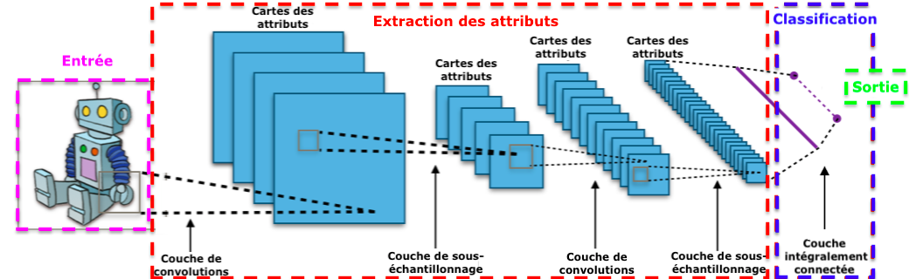

SITUACIÓN DE APRENDIZAJE / UNIDAD DIDÁCTICA
- Duración
- Agrupamiento
- 30

Img: https://commons.wikimedia.org/wiki/File:Typical_cnn.png
Centro de interés o temática
Aplicación de la inteligencia artificial, incluyendo modelos de aprendizaje automático y redes neuronales, redes neuronales convolucionales (CNN) y modelos basados en transformers para visión, junto con la robótica, para el análisis y la búsqueda de soluciones ante problemas medioambientales reales como la contaminación de playas.
Nivel al que va dirigido
4º de Educación Secundaria Obligatoria (ESO)
Temporalización aproximada
10–12 sesiones distribuidas de la siguiente manera:
2 sesiones: Introducción a la inteligencia artificial, datasets y problemática medioambiental
1 sesión: Diseño del proyecto y organización de grupos y roles
1 sesión: Recogida de datos en entorno real (salida)
2 sesiones: Selección, organización y etiquetado del dataset
3 sesiones: Introducción aplicada a modelos de IA y aproximación a CNN (funcionamiento conceptual y uso guiado)
1 sesión: Reentrenamiento de modelos con los datos generados
1 sesión: Investigación sobre robótica aplicada a la limpieza de entornos
1 sesión: Síntesis, reflexión final y evaluación
Materias implicadas
Tecnologías de la Información y la Comunicación (TIC)
Biología y Geología (enfoque medioambiental y sostenibilidad)
Idioma
Español/Inglés
Descripción general de lo que se pretende que el alumnado aprenda o trabaje
En esta situación de aprendizaje, el alumnado desarrollará un proyecto interdisciplinar centrado en el uso de la inteligencia artificial para analizar el estado de limpieza de playas y reflexionar sobre posibles soluciones tecnológicas a la contaminación medioambiental.
El proceso comenzará con una introducción a los conceptos básicos de inteligencia artificial y al papel de los datos en el entrenamiento de modelos. Posteriormente, el alumnado diseñará en grupo un plan de trabajo y participará en la recogida de datos en un entorno real, mediante la toma de imágenes que representen diferentes estados de limpieza de una playa.
Una parte fundamental del proyecto será la creación, organización y etiquetado de un dataset propio, dedicando varias sesiones a garantizar la calidad, coherencia y utilidad de los datos. Este proceso permitirá al alumnado comprender la importancia de los datos en el funcionamiento de los sistemas de inteligencia artificial.
A continuación, se trabajará con modelos de inteligencia artificial preentrenados, introduciendo el concepto de reentrenamiento (fine-tuning) mediante el uso de los datos generados. De forma progresiva y adaptada, se incorporará una aproximación a las redes neuronales, redes neuronales convolucionales (CNN) y modelos basados en transformers para visión centrándose en su lógica de funcionamiento y en su capacidad para procesar información secuencial, evitando la complejidad técnica excesiva.
El alumnado experimentará con herramientas accesibles que le permitan observar cómo los modelos pueden mejorar a partir de nuevos datos, comprendiendo los principios básicos del aprendizaje automático.
Como complemento, se desarrollará una actividad de investigación en la que el alumnado analizará aplicaciones reales de la inteligencia artificial en robótica, especialmente en sistemas diseñados para la limpieza de entornos naturales. Esta fase permitirá conectar los contenidos trabajados con soluciones tecnológicas actuales y fomentar el pensamiento crítico sobre su impacto.
El trabajo se organizará mediante aprendizaje cooperativo, con roles definidos dentro de cada grupo, promoviendo la responsabilidad individual y la colaboración. A lo largo del proceso se incluirán momentos de reflexión guiada, con el objetivo de consolidar el aprendizaje y asegurar la comprensión de los conceptos clave.
Se trabajarán competencias digitales, pensamiento crítico, resolución de problemas, trabajo en equipo y conciencia medioambiental, prestando especial atención tanto al proceso como al resultado final.
Justificación de la propuesta (basada en la rutina de pensamiento)
Esta situación de aprendizaje se diseña a partir del análisis reflexivo de una experiencia previa, en la que se puso en práctica una actividad basada en metodologías activas y en el uso de tecnología en un entorno real.
Entre los aspectos más positivos identificados en dicha experiencia, destaca la alta motivación del alumnado, su implicación en tareas prácticas y la conexión del aprendizaje con un contexto real. El uso de la inteligencia artificial como eje de la actividad resultó especialmente significativo, al tratarse de una tecnología cercana a la realidad actual del alumnado y con gran potencial educativo. Por ello, esta propuesta mantiene el enfoque activo, contextualizado e interdisciplinar.
Sin embargo, el análisis también evidenció diversas dificultades que han sido determinantes en el rediseño de la actividad. Entre ellas, destacan la falta de estructuración clara del proceso, la desigual implicación del alumnado, la dispersión en entornos abiertos y una evaluación poco sistematizada. Asimismo, se observó que parte del alumnado no alcanzaba una comprensión profunda de los objetivos de aprendizaje, especialmente en los aspectos más técnicos.
En respuesta a estas limitaciones, la presente propuesta introduce mejoras orientadas a reforzar la organización y la eficacia pedagógica:
Se amplía la temporalización para permitir un desarrollo más pausado y profundo
Se estructura claramente la secuencia de actividades
Se incorporan roles definidos dentro del trabajo cooperativo
Se incluyen sesiones específicas para el etiquetado de datos, reforzando un aspecto clave que anteriormente no se trabajó con suficiente profundidad
Se añaden momentos de seguimiento y reflexión durante el proceso
Se plantea una evaluación más estructurada
Además, se actualiza el enfoque tecnológico incorporando el concepto de reentrenamiento de modelos de inteligencia artificial y una aproximación a modelos más avanzados, como las redes neuronales, redes neuronales convolucionales (CNN) y modelos basados en transformers para visión. Esta incorporación responde a la necesidad de acercar al alumnado a tecnologías actuales, pero se realiza de forma adaptada a su nivel, priorizando la comprensión conceptual frente a la complejidad técnica, evitando así dificultades detectadas en la experiencia previa.
La ampliación del número de sesiones dedicadas a estos contenidos permite profundizar en el aprendizaje y reducir la superficialidad, uno de los aspectos identificados como mejorables.
Por otro lado, se introduce una dimensión de investigación en robótica como aplicación práctica de la inteligencia artificial. Este elemento permite ampliar la perspectiva del alumnado sobre el uso de la tecnología en la resolución de problemas reales, especialmente en el ámbito medioambiental, sin desviar el foco principal de la actividad.
Esta propuesta responde, por tanto, a la necesidad de equilibrar innovación y estructura, gestionando la incertidumbre inherente a las prácticas educativas transformadoras. Asimismo, refleja un proceso de mejora docente basado en la reflexión crítica, en el que se mantienen los elementos que favorecen el aprendizaje significativo y se incorporan estrategias para mejorar la organización, el seguimiento y la evaluación.
En definitiva, se plantea una situación de aprendizaje coherente con las demandas educativas actuales, que integra tecnología, contexto real y metodologías activas, garantizando al mismo tiempo una mayor profundidad en el aprendizaje y un mayor control del proceso educativo.